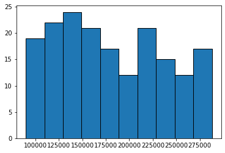
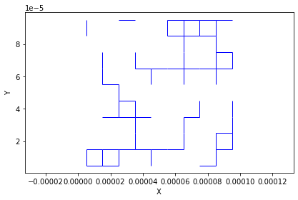
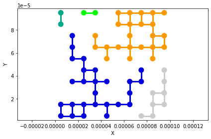
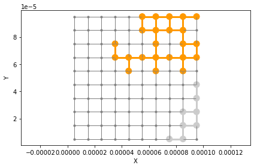

Simulating Drainage with Ordinary Percolation#
blah…
import openpnm as op
import numpy as np
import matplotlib.pyplot as plt
Generate a simple 2D network for easy visualization:
np.random.seed(1)
pn = op.network.Cubic(shape=[10, 10], spacing=1e-5)
op.topotools.plot_connections(pn);
---------------------------------------------------------------------------
AttributeError Traceback (most recent call last)
Cell In [2], line 3
1 np.random.seed(1)
2 pn = op.network.Cubic(shape=[10, 10], spacing=1e-5)
----> 3 op.topotools.plot_connections(pn)
AttributeError: module 'openpnm.topotools' has no attribute 'plot_connections'
Add geometrical properties to the network, and compute the capillary entry pressure for each throat:
geo = op.geometry.SpheresAndCylinders(network=pn, pores=pn.Ps, throats=pn.Ts)
h2o = op.phase.Water(network=pn)
h2o['throat.capillary_pressure'] = -4*0.072*np.cos(np.deg2rad(180))/geo['throat.diameter']
plt.hist(h2o['throat.capillary_pressure'], edgecolor='k');

The capillary entry pressure range from 100 to 300 kPa. In the next steps we’ll simulate an invasion at 150 kPa.
occupied_bonds = h2o['throat.capillary_pressure'] < 150000
op.topotools.plot_connections(pn, throats=occupied_bonds);

Perform a bond percolation by applying a cluster label to each occupied pore and throat, then plot. The bond_percolation algorithm requires a generic adjacency matrix, so that must be generated first:
am = pn.create_adjacency_matrix(triu=True)
s_labels, b_labels = op.topotools.bond_percolation(np.vstack((am.row, am.col)).T, occupied_bonds)
occupied_sites = s_labels >= 0
cm = 'nipy_spectral'
ax = op.topotools.plot_connections(pn, throats=occupied_bonds,
color_by=b_labels[occupied_bonds] + 1,
linewidth=3, cmap=cm)
ax = op.topotools.plot_coordinates(pn, pores=occupied_sites, color_by=s_labels[occupied_sites] + 1, ax=ax, cmap=cm, markersize=100)

Now remove any occupied sites and bonds that are not connected to specified inlets:
occupied_sites, occupied_bonds = op.topotools.trim_disconnected_clusters(b_labels, s_labels, inlets=pn.pores('right'))
Finally, replot the network with only the invading clusters kept:
cm = 'nipy_spectral'
ax = op.topotools.plot_connections(pn, c='grey')
ax = op.topotools.plot_connections(pn, throats=occupied_bonds,
color_by=b_labels[occupied_bonds] + 1,
linewidth=3, cmap=cm, ax=ax)
ax = op.topotools.plot_coordinates(pn, c='grey', ax=ax, markersize=10)
ax = op.topotools.plot_coordinates(pn, pores=occupied_sites, color_by=s_labels[occupied_sites] + 1,
cmap=cm, markersize=100, ax=ax)

We’ve shown the entire network in thin grey lines to help with the interpretation of this result.